- Feel free to create a test repo of your own (on your GitHub account) and follow along
- This is not meant to be an exhaustive introduction to all Git and GitHub features
- Best way to learn Git and GitHub are by using them
- If you get stuck, use the resources at the end of the last lecture
Example Git/GitHub Workflow
Jeffrey Leek, Assistant Professor of Biostatistics
Johns Hopkins Bloomberg School of Public Health
An example workflow
Create a new repo on GitHub
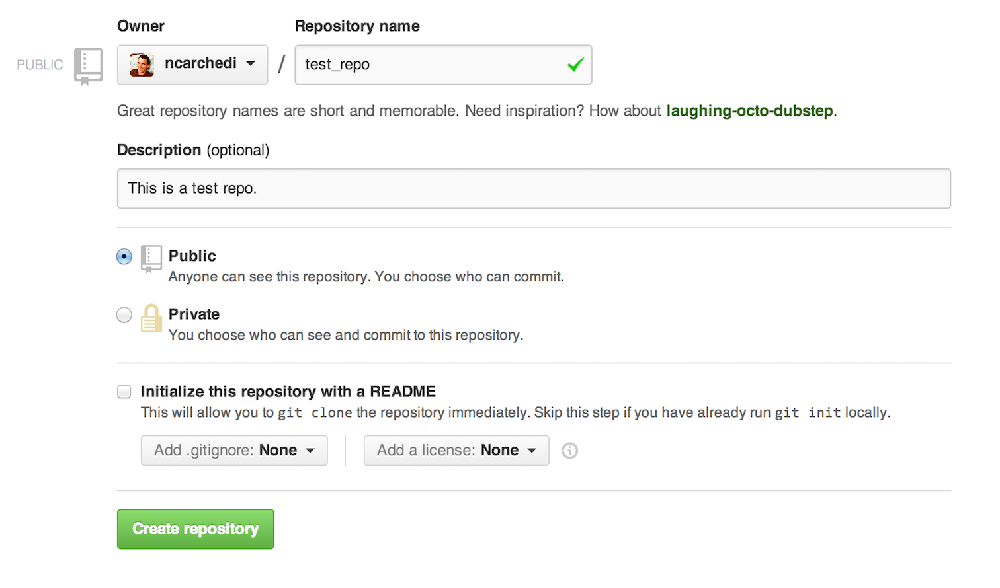
- Leave the box next to "Initialize this repository with a README" unchecked, since we will add one later
Copy repo URL to clipboard
- After clicking "create repository", you will get a screen with some basic instructions for getting started
- They are a good starting point, but we won't follow them exactly here
- Copy the URL displayed below to your clipboard (yours will be slightly different since it depends on your username and repo name)
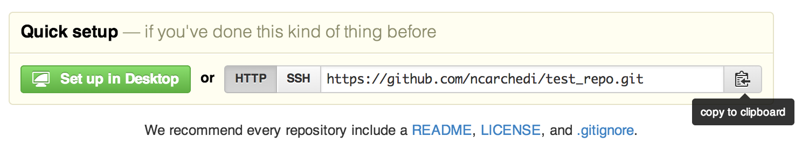
Create a new local directory
- Open Git Bash or Terminal (Windows or Mac, respectively) and create a new directory on your computer
- "Step inside" of this new directory with the
cdcommand mkdirstands for "make directory",cdstands for "change directory", andlsstands for "list"- Since we get no output after typing
ls, we can see that the directory we created is still empty
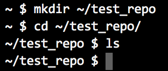
Create a new file in directory
- Open your favorite text editor and create a new text file
- Make sure to save it in the directory you just created
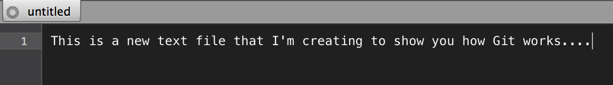
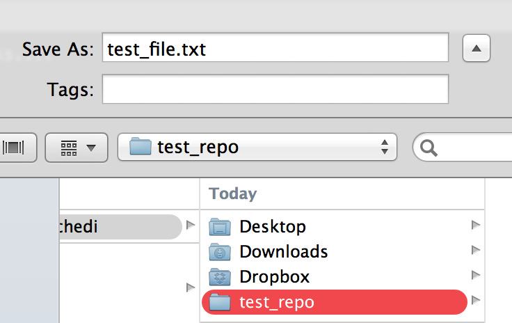
Create a new repo locally
- We already created a GitHub repository, but we still need to create a Git repository locally on your computer
- We can see that our new file is now in our chosen directory with
ls git initinitializes a Git repo in our current directorygit statusis a helpful command that we'll make frequent use of- Does exactly what is sounds like -- gives us a "status report" for our local repo
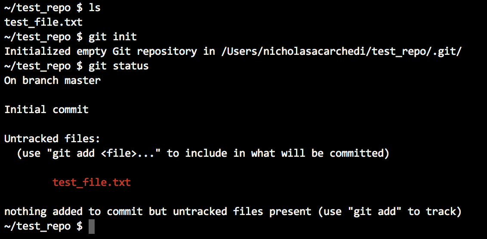
Stage file for commit
- Notice that our newly created file falls under "untracked files" when we look at
git status - Use
git addto tell Git that we want it to start "paying attention" to this file- Could have used
git add test_file.txtfor the same result, butgit add .is often easier if you are okay tracking all currently untracked files
- Could have used
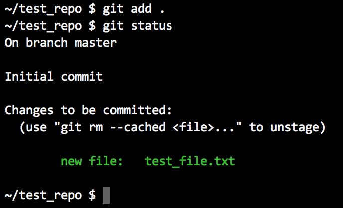
Commit changes
- Using
git commitwith a-mafter it tells Git that whatever follows in double quotes is the message that we want to attach to this round of changes - Another call to
git statusconfirms that there is nothing new to commit (since our first commit)
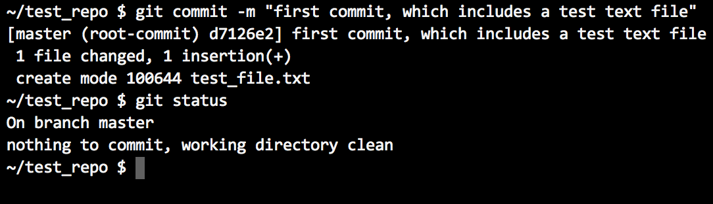
Check log
git logshows us a history of all commits- So far, there's only one
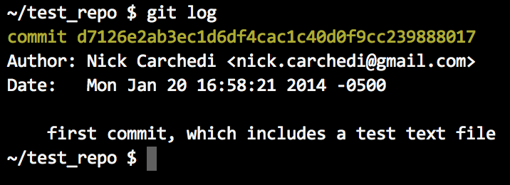
Add link to remote repo
- We now have a remote repo on GitHub's servers and a local repo on our computer, but they still don't know about each other
- To establish a link between the two, we paste the URL copied earlier from GitHub as follows
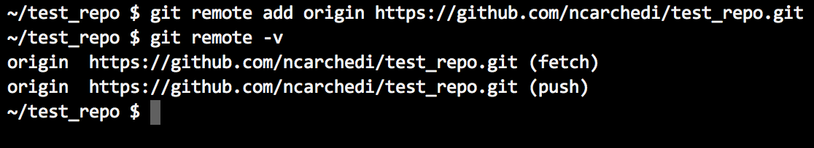
git remote -vshows us that our GitHub repo is now set up as a "remote" repository for our local repo, which allows the two repos to communicate
Push changes to GitHub
- We want our GitHub repo to reflect the changes we've made locally (i.e. to contain our new text file)
git push -u origin mastertells Git to push our changes to the "master" (or main) branch of the "origin" (or primary) remote- You only need to include the
-u origin masteronce, as Git will remember this configuration for futurepushesgit pushthen becomes sufficient, assuming you don't want to do anything fancy
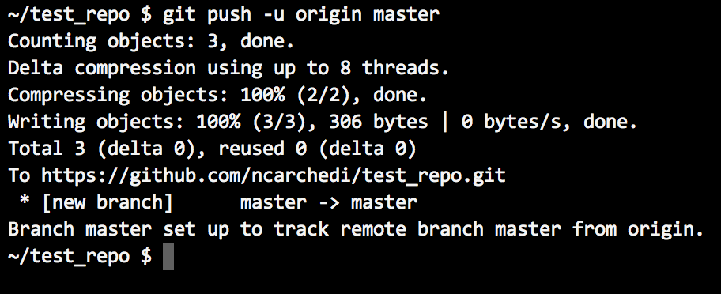
Check status
- Check status again for piece of mind
- Notice that it confirms Your branch is up-to-date with 'origin/master'
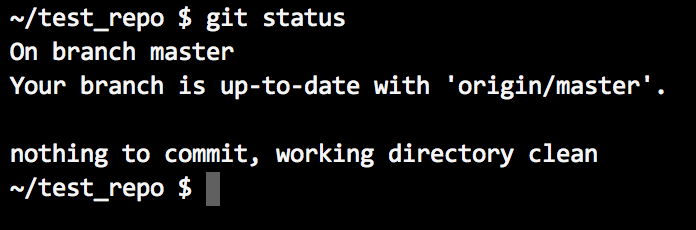
Check GitHub
- We want to make sure that our changes made it to GitHub safely and indeed they did
- Our text file shows up in the file list
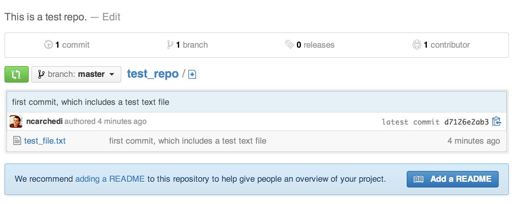
Add README file from GitHub
- How can we can "pull" changes from a remote repository to our local repository?
- To illustrate, we'll add and edit a README file directly from the GitHub website
- A more common scenario would be that a collaborator makes changes to a shared repository and you want to incorporate those changes into your local repo
- Click on the "Add a README" button on your GitHub repo page, under the list of files
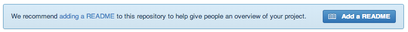
Edit README file from GitHub
- Put anything you want in the README, then press "Commit New File" to commit the file to your GitHub repo
- Note: README files written in Markdown will render in HTML on your repository's homepage.
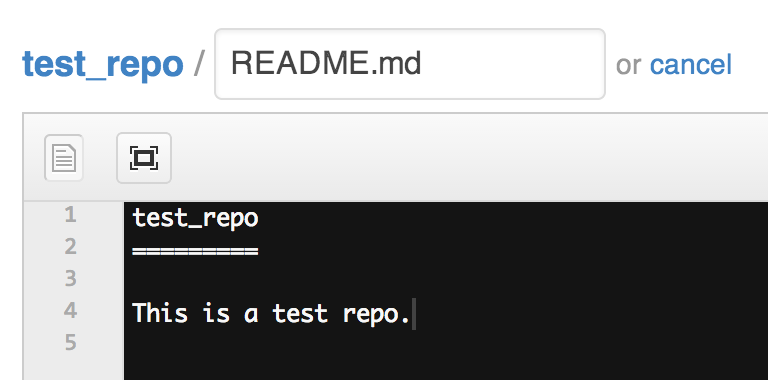

Fetch changes from GitHub
- Now that README.md exists on GitHub, we want to "pull" it down to our local repo
- There is a
git pullcommand that allows you to do this, but it's recommended that you instead use a combination ofgit fetchandgit merge git fetch origintells Git to fetch all changes from the "origin" (primary) remote repo, which we set up earlier withgit remote add origin ...
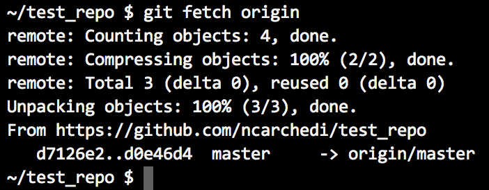
Merge changes into local repo
- Git is now aware of all changes that have been made to the remote (i.e. GitHub) repo
- Still need to incorporate these changes into our local repo
git branch -ashows us that we now have two "branches" stored on our computer:masterandremotes/origin/mastermasterrepresents the files on our local repo andremotes/origin/masterrepresents the files we pulled from our remote repo- Use
git merge origin/masterto incorporate the changes from our remote repo
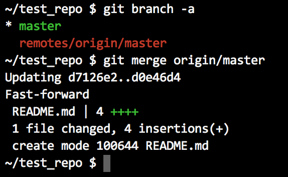
Check status
- A quick call to
lsconfirms that the README.md file is now in our local directory git statustells us that we have no new changes and are up-to-date with our remote repo
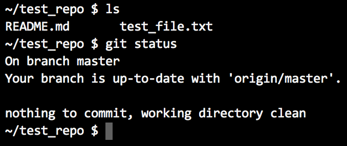